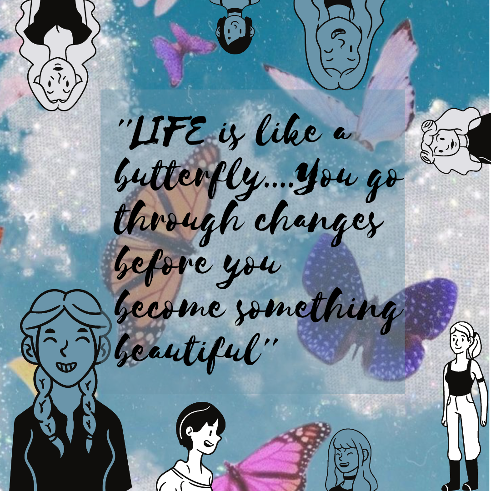
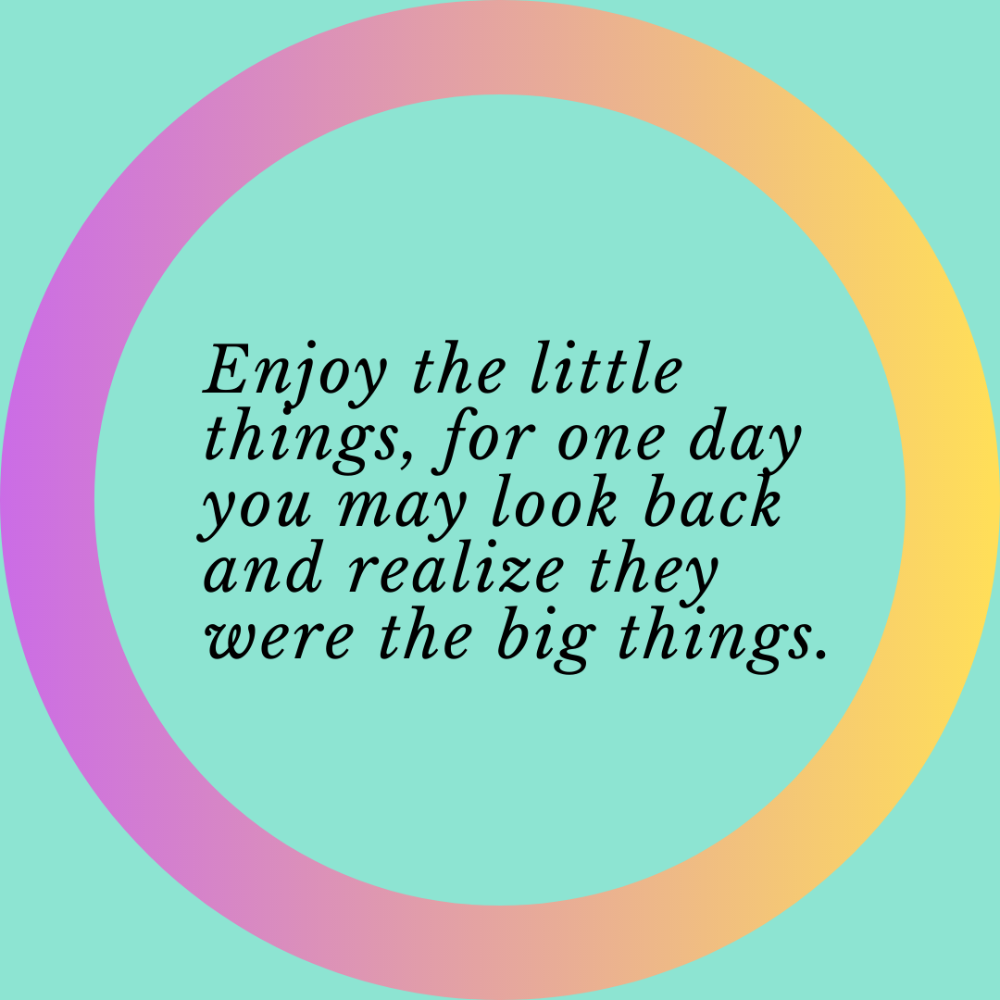
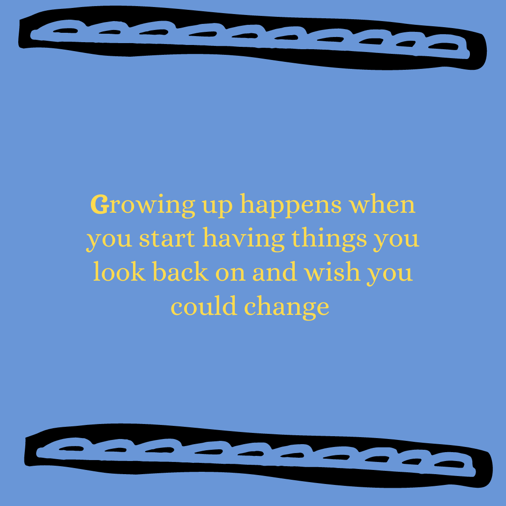
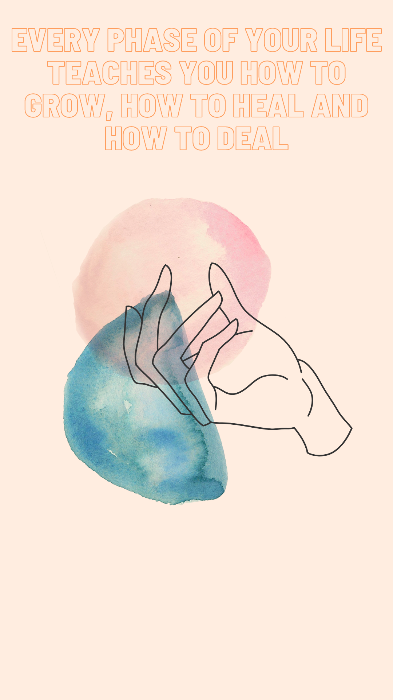

Harvard Ed Portal Summer Intern Program
Quote Gallery!
1 / 7

By: Cristel Torres
2 / 7

By: Brandy Altidor
3 / 7

By: Taylor Scantlebury
4 / 7

By: Sandy Calva
5 / 7

By: Gelila Mulualem
6 / 7

By: Lily Healy
7 / 7

By: LaToya Kaylar